Installation and Authentication¶
What you'll do here: install the add-in in Fusion and sign in to Fusion Manage. Install it first, then choose your route: Admin Route for the Hub Admin who sets it up, Member Route for everyone else.
1. Install the add-in¶
- Download the latest zip from the Releases page and unzip it. You get a folder named Fusion Manage Item Management, which holds
Fusion Manage Item Management.pyandFusion Manage Item Management.manifest. - In Fusion open Utilities ▸ Add-Ins ▸ Scripts and Add-Ins, switch to the Add-Ins tab, click + (add existing add-in) and browse to the folder.
- Select Fusion Manage Item Management in the list and click Run. Tick Run on Startup if you want it to load with Fusion.
The add-in supports Windows and macOS. Once it is running, an Export panel and an Item Management panel appear in the Manage tab of the Design and Drawing workspaces. Most buttons stay greyed out until setup is complete.
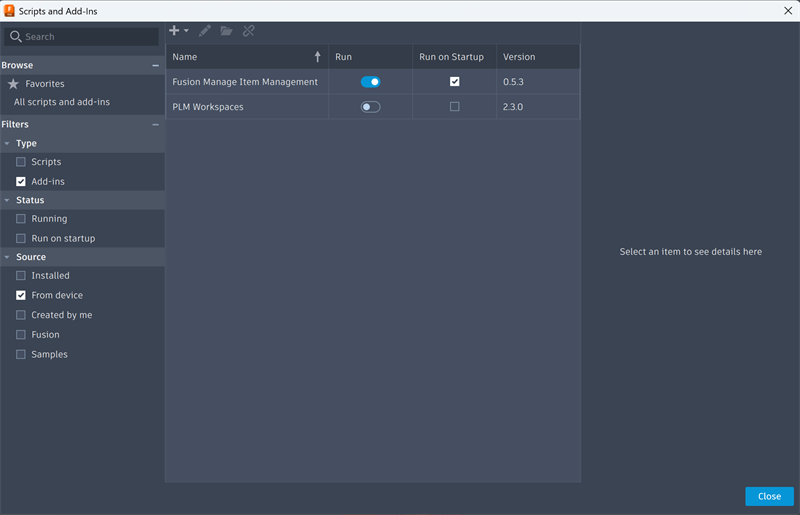
Choose your route¶
Admin Route is for the Hub Admin who sets the add-in up for the hub, once. Member Route is for everyone else in the hub, once a Hub Admin has published the setup.
Has another Hub Admin already set this up?
Then do the Member Route, even if you are a Hub Admin yourself. The hub only needs one setup, and the Configuration File already holds it, so you do not need your own APS app or tenant. If the setup wizard opens, choose Already set up, then click Find Configuration File and pick the file. You can still change the settings afterwards as a Hub Admin, and publish them again with Save & Publish.
2. Get a Client ID¶
Admin Route. Members skip to the Member Route.
The add-in signs in through Autodesk Platform Services (APS), so it needs an APS application. The application's Client ID identifies the add-in when you sign in. This is done on the APS website, not in Fusion.
You may already have one
If your organisation has already created an application for this add-in, ask for its Client ID and skip to stage 3. One application can be shared by everyone; each person still signs in with their own Autodesk account.
What you need first:
- An Autodesk account that can sign in at aps.autodesk.com.
- An APS subscription (Free or Paid tier) assigned to a team.
- A Team Administrator to set up the APS Developer Hub, if your organisation does not have one yet. See Administrator setup.
2.1 Create the application¶
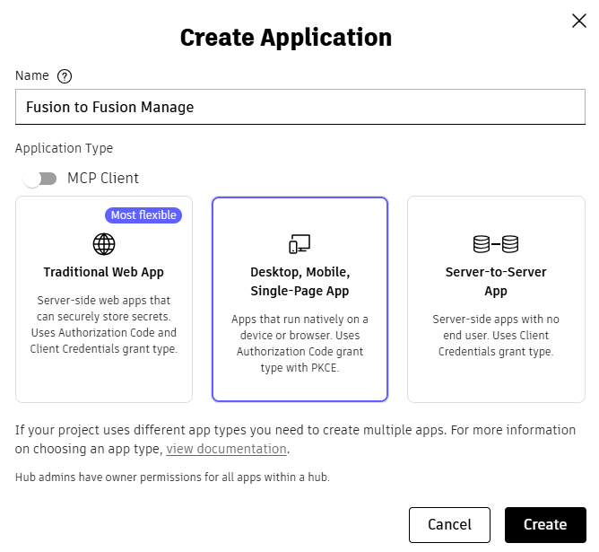
- Sign in at aps.autodesk.com and open My Applications.
- Click Create application.
-
When asked for the application type, choose Desktop, Mobile, Single-Page App.
Choose this type
The add-in signs in with PKCE and never holds a client secret. This is the type APS recommends for applications that cannot protect their credentials. Do not choose Traditional Web App or Server-to-Server App.
-
Enter an application name and description, for example Fusion Manage Add-in.
- Select the APIs the add-in uses: the Manufacturing Data Model API (to read designs) and the Identity API (for your profile picture). Select the matching entries your portal offers.
-
Set the Callback URL to exactly:
http://localhost:8765/callbackIf you will use a different callback port in the add-in, use that port here instead. The two must match exactly.
-
Save the application.
Labels can change
The APS portal is updated from time to time, so button names and field order may differ slightly from this list. The application type, the APIs and the callback URL are what matter.
2.2 Copy the Client ID¶
Open the application under My Applications. Its details page shows the Client ID, a 32-character string. Copy it. You will paste it into the add-in in the next stage.
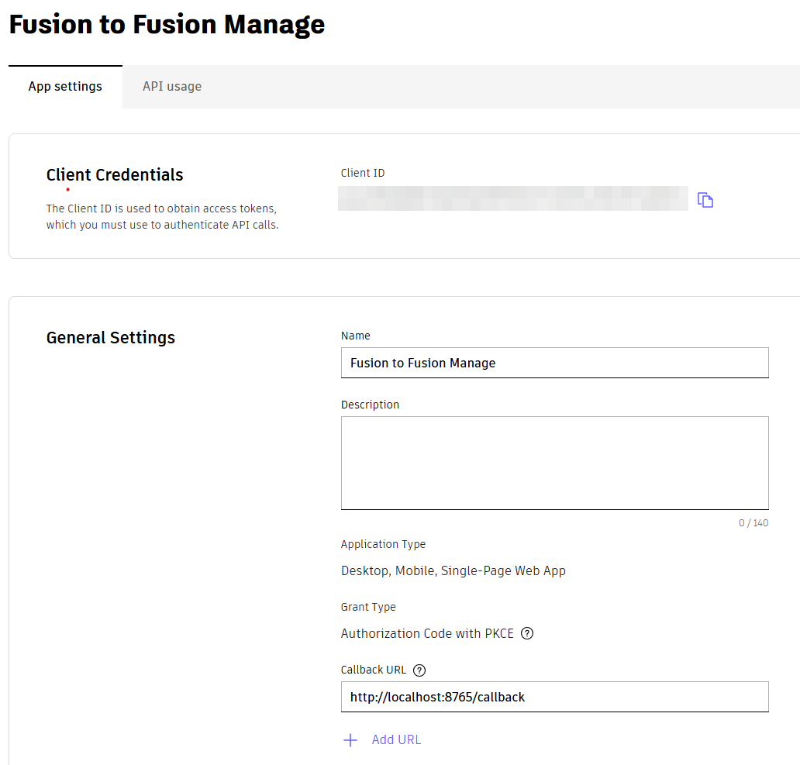
An application of this type has no client secret that you need. Never type one into the add-in.
Administrator setup¶
Team Administrators only: APS subscription and Developer Hub
A1. Get an APS subscription (Team Administrator)
Skip this if your organisation already has an APS offering assigned to a team.
- Go to aps.autodesk.com and sign in or sign up. Click View options.
- On the APS overview page, use the Site Selector (top right) to choose your country before signing in.
- Click Pricing in the left-hand menu, then Add to Cart under the offering you want, then Checkout and complete the customer details.
- A Free plan is not charged, but checkout still asks for a payment method.
- A Paid plan needs a valid payment method.
- Click Access Account, which opens the Autodesk Account portal.
- If you administer more than one team, go to Billing and Orders ▸ Subscriptions and Contracts and confirm the APS offering is assigned to the right team.
Note
If your region is not offered in the Autodesk Store, contact aps.orders@autodesk.com.
A2. Create the APS Developer Hub (Team Administrator)
The Developer Hub is where your organisation's APS applications live, and where you control who can create them.
- Open manage.autodesk.com.
- Go to Products and Services ▸ Hubs.
- Choose the team the APS offering is assigned to.
- Click Create Hub and select APS Developer Hub.
- Enter a Hub Name and click Create & Activate.
- Under Cloud Product, click the APS Developer Hub link. This opens aps.autodesk.com/hubs.
No “APS Developer Hub” option?
The team has no APS offering assigned to it. Complete step A1 first.
A3. Add developers to the hub (Team Administrator)
- In the hub, open Roles and Access.
- Click Add Member and enter the person's email address.
- Choose an access level, Admin or Developer, and click Add.
Anyone who needs to create the application must be a member of the hub.
A4. Moving an existing application into the hub
If you already created the application before your organisation had a Developer Hub, move it in:
- Sign in at aps.autodesk.com and open My Applications.
- Select the application.
- Click Move apps to Developer Hub.
- Select the hub name and click Next.
You must already be a member of the hub (see A3).
More reading
This section follows Autodesk's own guide, APS Developer Hub Setup and App Migration, and the post New application types. Refer to them if your portal looks different.
3. Configure the connection¶
Admin Route.
Open Manage ▸ Item Management ▸ Administration ▸ Preferences. Until a Client ID is saved, the panel shows a setup wizard instead of the sign-in card. It walks you through the connection in two parts: the app and Client ID, then your tenant.
3.1 Set up Fusion Manage¶
The first screen, Set up Fusion Manage, asks how to start:
- New setup shows the four steps below. Use it when nobody has set this hub up yet.
- Already set up is for a hub another Hub Admin has already set up and published. Click Find Configuration File and choose the file (Member Route). You skip the steps below and the tenant step.
The steps for a new setup:
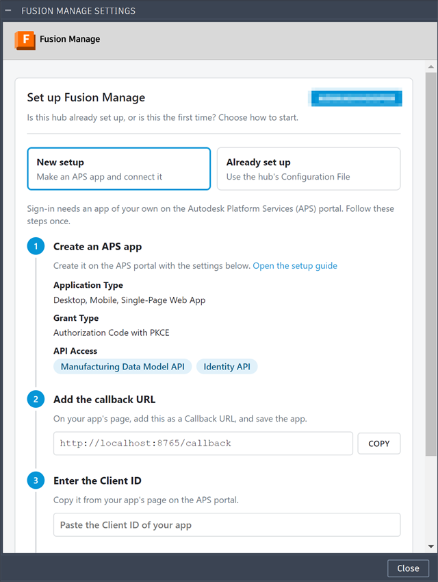
- Create an APS app. If you have not done so, follow stage 2. The wizard lists the settings the app needs: Desktop, Mobile, Single-Page Web App, grant type Authorization Code with PKCE, and the Manufacturing Data Model API and Identity API. Open the setup guide opens Autodesk's guide to creating an app.
-
Add the callback URL. On your app's page in the APS portal, add the callback URL the wizard shows and save the app. Copy puts it on your clipboard. With the default port it is:
http://localhost:8765/callback -
Enter the Client ID. Paste the Client ID from step 2.2.
- Sign in. Click Save and sign in. The button stays disabled until a Client ID is entered. It saves the Client ID and opens the Autodesk sign-in in your browser. Approve access there and return to Fusion (how sign-in works).
3.2 Connect your tenant¶
Once you are signed in, a Hub Admin sees Connect your Tenant. It is required, and the tabs stay hidden until a tenant is saved.
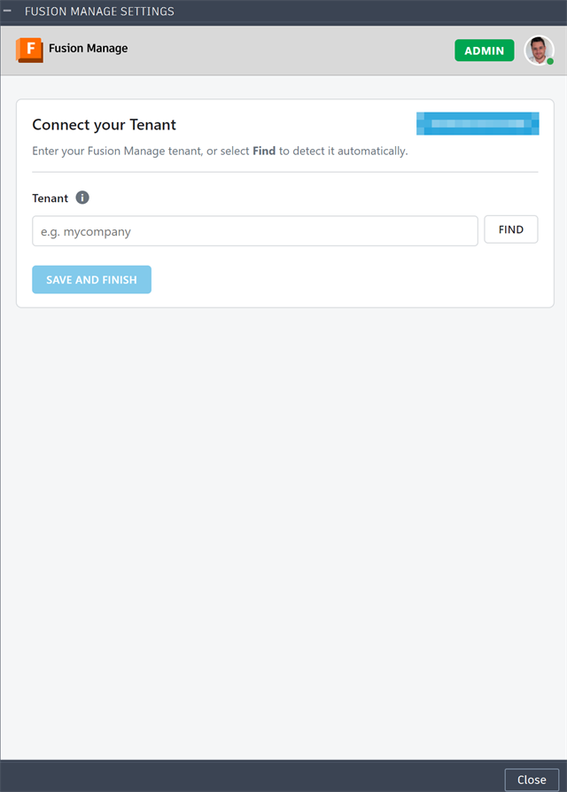
Click Find to fill in the tenant automatically
Open a design linked to a Fusion Manage item, then click Find. The add-in reads the tenant from that item's address and fills in the field, so you do not have to type it.
Find only works when:
- You are signed in, because it reads the design through your Autodesk account.
- A design is open in Fusion and is the active document. A drawing, or a document with no design, gives nothing to read.
- The design is saved to your hub, so the Manufacturing Data Model knows it.
- The design is linked to a Fusion Manage item. If it is not, the panel says so; open one that is, or enter the tenant yourself.
It reads only the open design, and gives up if there is no answer after a minute.
Or enter the Tenant yourself:
-
Open Fusion Manage in your browser and look at the address bar. It looks like this:
https://acme.autodeskplm360.net/plm/... -
Copy only the first part of the host name, the bit before
.autodeskplm360.net. Here that isacme. Do not copyhttps://,.autodeskplm360.netor anything after it. - Paste it into the Tenant field, so the field holds just
acme.
The tenant can only be letters, digits and hyphens, never a whole address. The hub's name is not the tenant, so the add-in does not guess it.
Whichever way you filled it in, click Save and finish to keep it. Find only fills in the field; it does not save.
Anyone who is not a Hub Admin does not see this step. They are asked to find the hub's Configuration File instead (below).
3.3 Change the connection later¶
After setup, the same settings are on the Connection tab of Preferences.
Only a Hub Admin can change them
Settings belong to the Fusion hub that is active. When Preferences opens, the add-in checks your role in that hub, and checks again when you return to the panel. A Hub Admin can edit the Connection tab. Anyone else sees the fields greyed out, with the note "These settings come from the hub's Configuration File. Only a Hub Admin can change them." If the add-in cannot check your role, the tab is left usable, so a failed check does not lock out an admin.
To change a setting, as a Hub Admin:
- Open Preferences and go to the Connection tab.
- Edit the field. If you change the Callback port, the callback URL shown under it updates as you type.
- Click Save to keep the change on this computer, or Save & Publish to also share it with the hub, so your colleagues get the change (how it works). The settings are checked first, and a problem is shown instead of saving. A Save successful window confirms a save.
Two changes need a follow-up:
- Client ID: sign-in is kept per Client ID, so after changing it you sign in again with the new one.
- Callback port: the callback URL on your APS app must match the new port, or sign-in fails.
| Setting | What it is |
|---|---|
| Client ID | The Client ID from step 2.2. |
| Callback port | The port in your callback URL. Default 8765; allowed range 1024–65535. If you change it, change the callback URL on your APS app to match. |
| Scopes | Leave as data:read data:write data:search user-profile:read. |
| Tenant | The tenant from step 3.2. |
The tab shows the callback URL it will use. It must be registered on your APS application exactly as shown. A Client ID, a valid port and at least one scope are required before you can sign in.
Save to Fusion Hub¶
Save puts the settings on your own computer only. Save & Publish saves them and also stores them in the hub, as a Configuration File, so the other people in the hub can use the same setup without entering it themselves. Only a Hub Admin sees Save & Publish.
- Click Save & Publish. Once the settings pass validation and are saved on this computer, a Save to Fusion Hub window opens, showing the hub's projects and folders.
- Open a project, then a folder in it, where the hub's members can read files. New project (at the top of the hub) and New folder (inside a project) make one if you need it. A project of its own is best (see below).
- Click Save here. The add-in uploads
Fusion-Manage-Item-Management-config.jsonto that folder and tells you which folder it went to.
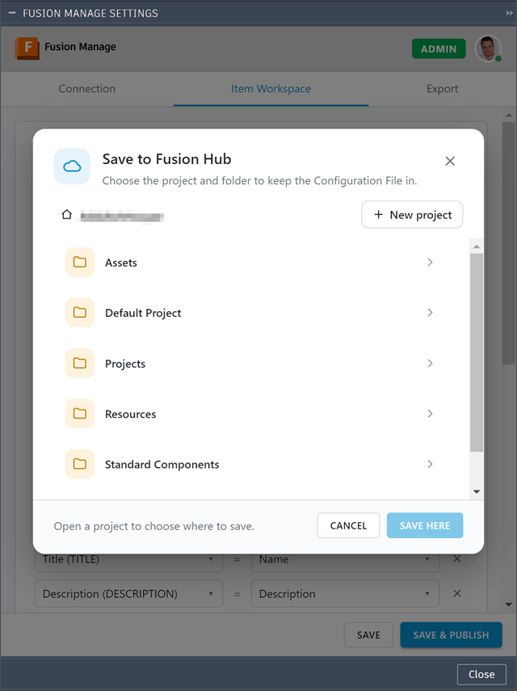
Give your members access to the file¶
It is recommended to create a new project for the Configuration File, with New project, and save it there. A project of its own keeps the file out of the way of design data, and lets you control who can see it in one place. Saving the file does not give anyone access to it. Members can only find it, read it and download it if they have access, so set that up once, straight after the first Save & Publish:
- In Fusion, open the project (or the folder) the file is in, and go to its Members and Permissions tab.
- Make sure everyone who needs the add-in is there with Reader access. Reader is enough to view and download the file, and members never need to change it. Use Add member to add people by email, or a group to add several at once. A group that already holds your members, such as Everyone (System Group), is the quickest way, if it suits who may see the file.
- Check the Permission level of each person or group. Anyone not listed, or with no access, will not see the file when they look for it.
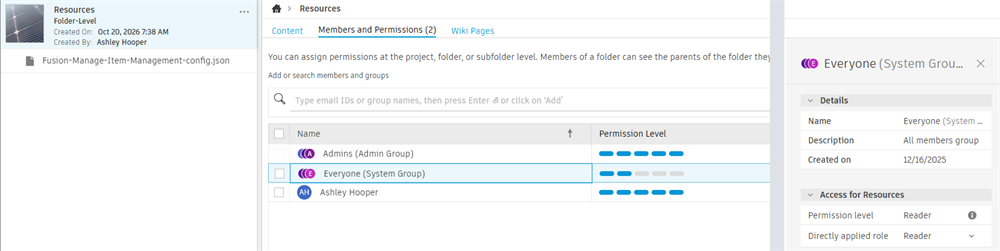
Keep editing for Hub Admins
Only the Hub Admins who publish need to be able to add files to the folder. Everyone else can be a Reader.
What to know:
- It holds your setup, not anyone's sign-in. The file has the tenant, workspaces, field mappings, exports, and the Client ID with its callback port and scopes, so members can sign in without making an APS app. It never holds sign-in tokens or a client secret.
- The upload uses your Fusion session. It needs no extra permission, but you must be allowed to add files to the folder you pick. If not, the add-in says so.
- It is for the active hub. A file saved from one hub is refused by another.
- Publish again after a change. Each Save & Publish uploads the file again to the folder you choose. Choose the folder your colleagues already use, so they keep reading the same file.
- Members find it once. After that, their add-in reads it again each time Preferences opens, so a change you publish reaches them without them doing anything (what members do).
Members: connect with the hub's Configuration File¶
Member Route.
Each Fusion hub has its own settings, so switching hubs in Fusion switches the settings too. Only a Hub Admin of the hub can change them. When you open Preferences the add-in checks your role in the active hub. If you are a member, not a Hub Admin, you do not create an APS app, copy a Client ID or enter a tenant. A Hub Admin has done that once and published the result, and you use it.
Before you start: a Hub Admin must have used Save & Publish (above) so the file is in the hub, and given you Reader access to the project it is in (how). If you cannot find the file, ask a Hub Admin where it is and whether you have access.
The route¶
- Install the add-in. Follow stage 1. It is the same for everyone.
- Make the right hub active. In Fusion, open the hub the setup was published for. A file from another hub is refused.
- Open Preferences. Choose Manage ▸ Item Management ▸ Administration ▸ Preferences. The panel shows Find your Configuration File, with the hub's name. Click Find Configuration File.
-
Open the folder. The Find the Configuration File window lists the hub's projects. Open the project and folders the Hub Admin saved the file in. Use this file stays greyed out until you choose a file.
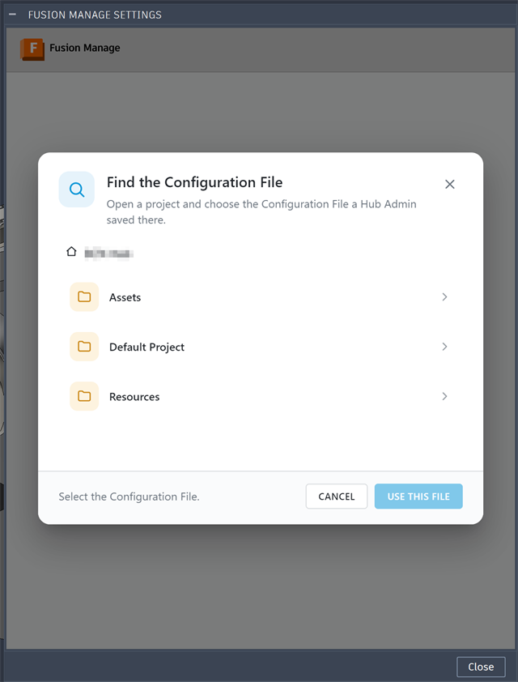
-
Choose the file. Click
Fusion-Manage-Item-Management-config.json. The window names it at the bottom (Selected …). Click Use this file.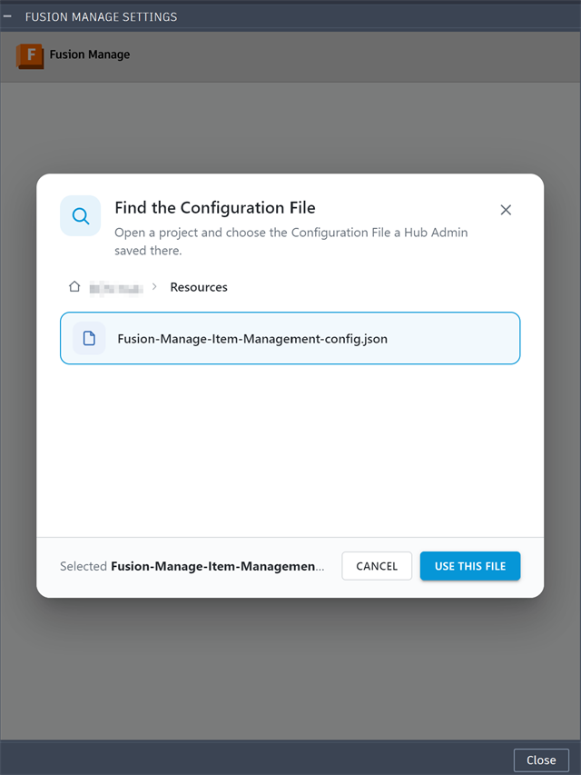
-
Sign in. The add-in reads the file and the panel changes to Sign in to Fusion Manage, with the hub's name. Click Sign in, approve access in your browser and return to Fusion. You sign in with your own Autodesk account (how sign-in works).
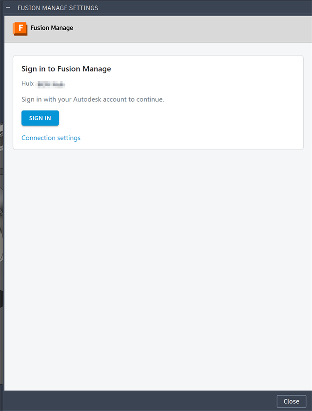
-
Check the Configuration tab. Once you are signed in, the panel opens on the Configuration tab. It shows the file you are using and whether it is up to date. Your role shows as Member.
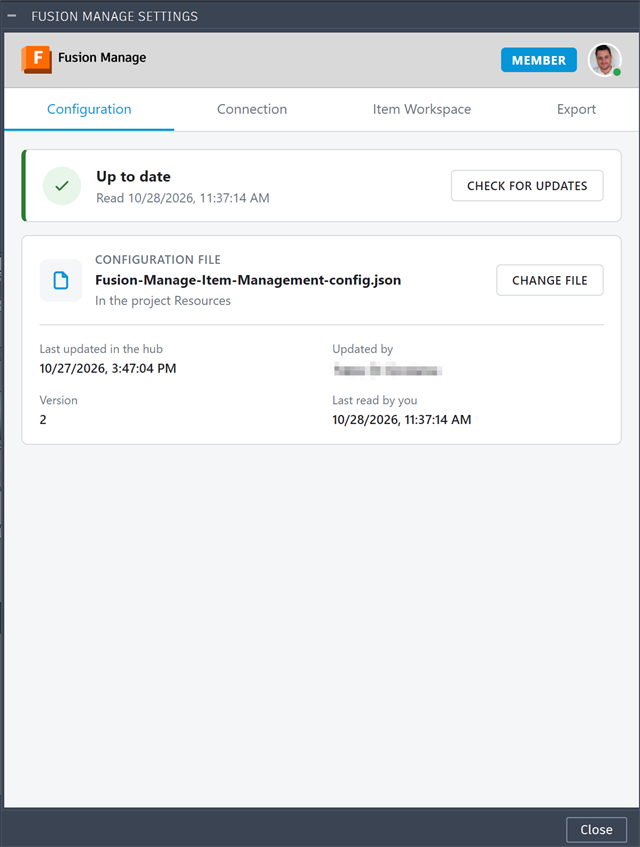
You are ready to use the add-in. There is nothing else to set up.
How it works¶
- The file is the setup. It holds the tenant, workspaces, field mappings, exports, and the Client ID with its callback port and scopes. The add-in takes these from it, so you do not enter them. It never holds sign-in tokens, so you still sign in yourself.
- Your settings are read-only. The Connection, Item Workspace and Export tabs show what the file defines, with fields greyed out and the note "These settings come from the hub's Configuration File. Only a Hub Admin can change them." Members do not see Save & Publish.
-
It stays up to date. The file is read again each time Preferences opens, so a change a Hub Admin publishes reaches you without you doing anything. The status at the top of the Configuration tab says where you stand:
Status Meaning Up to date You are using the latest file in the hub. It shows when it was read or checked. Checking for updates… The add-in is asking the hub if the file has changed. Updated to the latest version The file had changed, and you now use the new one. It names who changed it. Could not check for updates The check got no answer. The add-in keeps the file you have, so try again in a moment. -
Check for updates asks the hub at once, without closing Preferences. Change file lets you pick a different file, for example if the Hub Admin moved it to another folder.
- The file's details. The card shows the file's name and project, Last updated in the hub, Updated by, its Version in the hub, and Last read by you.
- Your own Client ID is kept. If you already had a Client ID, the add-in keeps it, and your sign-in, and takes only the setup from the file.
- Files that are refused: one saved from another hub, one over 1 MB, or one that is not a Fusion Manage Item Management configuration. A file with no Client ID is also refused, so ask the Hub Admin to publish again.
How sign-in works¶
The wizard's Save and sign in button starts sign-in for you. Your browser opens the Autodesk sign-in page; sign in and approve access, and the browser shows Authorization received. Return to Fusion and the panel unlocks its tabs. Sign-in waits up to 180 seconds, and Cancel ends it sooner. Later, if you have signed out or your session has expired, Sign in on the Preferences panel does the same. To sign out, use the account menu in the panel header, which removes the stored tokens for the current Client ID.
This section explains what happens behind that. The add-in uses the OAuth 2.0 authorization-code flow with PKCE. Your password is only ever entered on the Autodesk sign-in page, never in Fusion or the add-in.
sequenceDiagram
autonumber
actor User
participant Addin as Fusion Manage add-in
participant Browser as Web browser
participant APS as Autodesk sign-in (APS)
participant Store as Secure token store
participant Svc as Data Model and Fusion Manage
User->>Addin: Click Sign in
Note over Addin: Create PKCE code verifier,<br/>code challenge and state
Addin->>Addin: Listen on 127.0.0.1 at the callback port
Addin->>Browser: Open the authorize URL<br/>(client ID, scopes, challenge, state)
Browser->>APS: Request sign-in
User->>APS: Sign in and approve access
APS-->>Browser: Redirect to localhost callback<br/>with code and state
Browser->>Addin: GET /callback?code=...&state=...
Note over Addin: Check state matches,<br/>otherwise reject the sign-in
Addin-->>Browser: "Authorization received. Return to Fusion."
Addin->>APS: Exchange code and code verifier for tokens<br/>(no client secret)
APS-->>Addin: Access token and refresh token
Addin->>Store: Save tokens, encrypted<br/>(Windows DPAPI or macOS Keychain)
Addin-->>User: Panels unlock
rect rgb(238, 242, 255)
Note over Addin,Svc: Every later request
Addin->>Store: Load tokens
alt Access token still valid
Addin->>Svc: Request with access token
else Expires within 60 seconds
Addin->>APS: Refresh with refresh token
APS-->>Addin: New tokens
Addin->>Store: Save new tokens
Addin->>Svc: Request with new access token
end
endIf sign-in is cancelled, rejected or times out after 180 seconds, nothing is stored. If a refresh fails, the stored tokens are cleared and you are asked to sign in again.
How sign-in stays secure¶
- The add-in listens on
127.0.0.1only, for that one redirect, and checks thestatevalue to reject forged redirects. - It uses PKCE and sends no client secret.
- Tokens are never written to the configuration file or to logs.
| Platform | Where tokens are stored |
|---|---|
| Windows | Encrypted with Windows DPAPI for your user account, in a file under %LOCALAPPDATA%\MfgToFm. |
| macOS | Your login Keychain. |
Permissions in Fusion Manage¶
Signing in proves who you are. It does not give you access to anything in Fusion Manage. What you can do is decided by the permissions your Fusion Manage user holds in the Items workspace, which are set by your Fusion Manage administrator through your role. The add-in reads them from Fusion Manage each time it needs them, and never changes them.
Ask your Fusion Manage administrator, not the add-in
If something is refused, the add-in cannot grant the permission. Send your administrator the permission names from the message, and ask for them on the Items workspace.
What each task needs
| Task | Permissions required in the Items workspace |
|---|---|
| Choose the Items workspace in Preferences | View Items, Add Items, Edit Items, View BOM, Add To BOM and Edit BOM |
| Publish a design as new and updated items, and their BOMs | The same six |
| Open an item in the Item Panel | View Items |
| Attach a STEP file or a drawing PDF | View Items, Add Attachments and Edit Attachments, in the workspace the file goes to (the Items workspace, or the Components workspace for a component) |
The first two rows ask for all six, whether or not a given publish adds or changes anything. This is because the BOM is always published. Within that, creating an item needs Add Items, updating one needs Edit Items, and BOM lines need Add To BOM and Edit BOM. See Publishing.
Tabs in the Item Panel
A tab you lack the permission for is greyed out, rather than hidden. Hover over it to see "Insufficient permissions".
| Tab | Permission |
|---|---|
| Item | View Items |
| Files | View Attachments |
| BOM | View BOM |
| Where Used | View Where Used |
| Workflows | View Associated Workflow |
| Changelog | View Change Log |
If a permission is missing
The message names what is missing, for example:
Insufficient permissions to publish to the Items workspace. Missing: Add Items, Edit BOM.
In Preferences, choosing a workspace you lack permissions on says "You need these permissions on workspace: ...". If Fusion Manage refuses the check outright, the message says "Insufficient permissions" without a list. Either way, ask your administrator to add the permissions to your role, then try again.
Next step¶
Continue to Configuration, where you choose the Items workspace, map fields to it and set where exported files are attached. To see what the add-in reads from your design first, read Manufacturing Data Model.